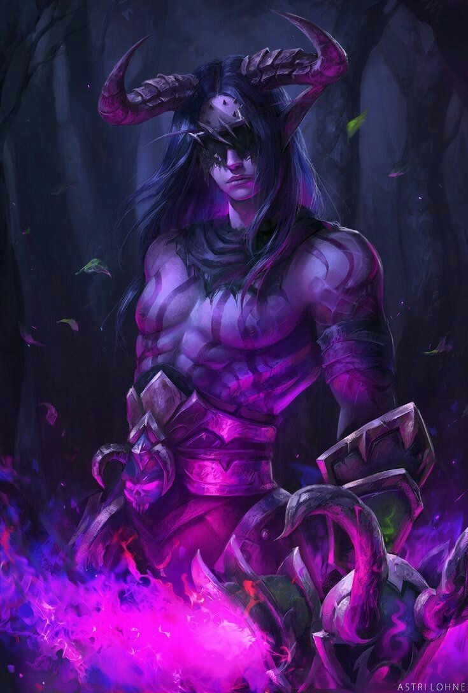

Force

Résistance
Dextérité
Variable
Magie

Ingénierie

Environnement : Tertres-du-Temps - étendues
Durée de vie moyenne : 500 ans
Taille : M - G
Système politique : Loi du plus fort - société non organisée et dispersée
Statut politique : Sous les ordres du Néant
Relations hostiles : Anges - Archanges - Ysiiri
Alliés : Aucun défini, mais peuvent faire alliance avec tous les peuples sous les ordres de Ga'ar
Croyance : Ga'ar
Force
Résistance
Dextérité
Variable
Magie
Ingénierie
Capacités innées : Force et endurance accrues
Facilités magiques : Occultisme et magie noire
Désavantage : Pertes de contrôle laissant place à une certaine bestialité en fonction des individus
Impossibilités : Lumière et pouvoirs purs
Les démons ont été créés par le Néant pour conquérir les Tertres-du-Temps autrefois sous la possession des Hommes. La majorité d’entre-eux sont fourbes et manipulateurs, les autres brutaux et barbares, ce qui forme un équilibre chaotique dans leur espèce. Si leur affiliation à Ga’ar est évidente, certains portent tout de même des desseins personnels de conquêtes.
Profil type : Sanguin - Manipulateur - Tempétueux - Impulsif
Alimentation : Carnivore - Chasse et meurtres
Montures : Chevaux démoniaques
Il faut savoir définir les différents types de démons, tels que les succubes et les incubes ou encore les supérieurs. Les supérieurs portent un contrôle complet sur les autres membres de leur espèce, jugés inférieurs et représentent tous un péché ou un élément considéré comme néfaste, comme par exemple la Luxure, la Pestilence, le Mépris ou autres.
(Démons supérieurs non jouables comme OCs.)
Les intermédiaires quant-à-eux ont une forme purement humaine mais conservent quelques marques de leur nature, par exemple des ailes ou des cornes proéminentes.
Les inférieurs, eux, ressemblent à des choses, bien souvent stupides ou impulsives, rodant en meute comme des bêtes ou dotés d’une intelligence restreinte qui les relègue au rang de sous-fifre.

Nombre d'OC de cette race sur Yndrill: -